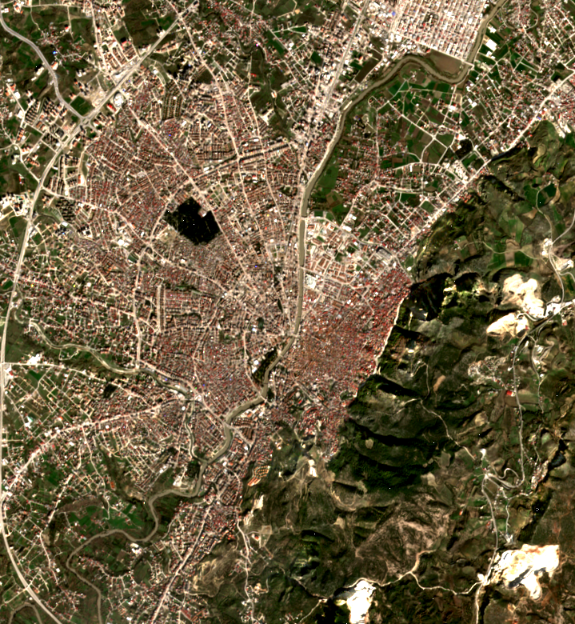
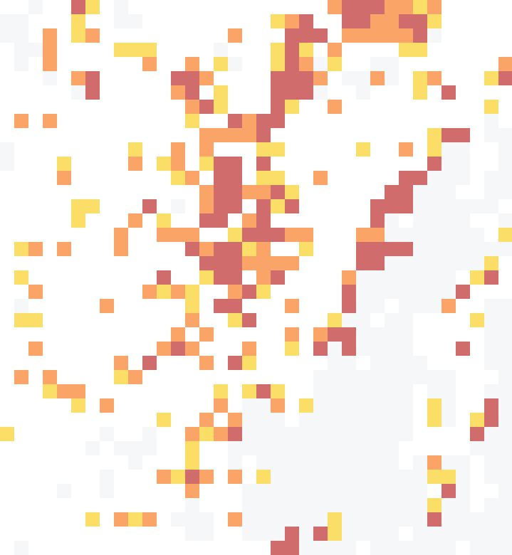
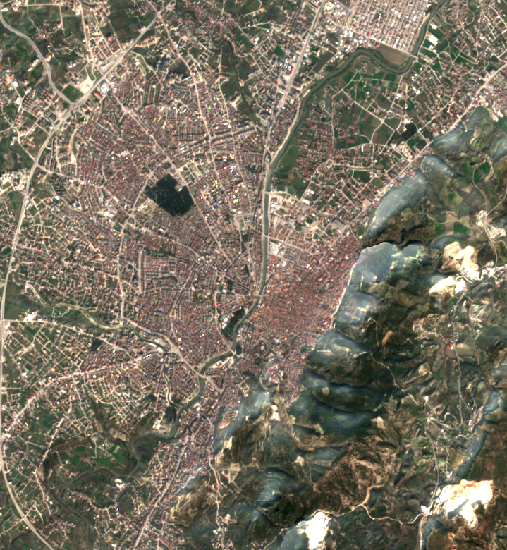
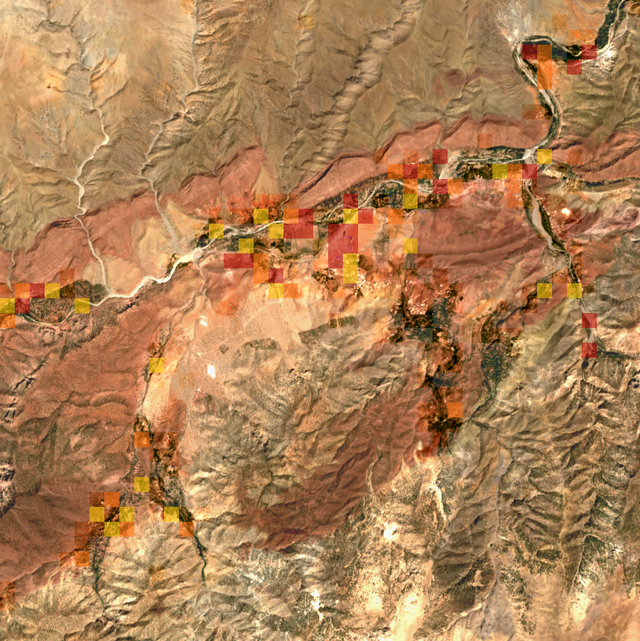
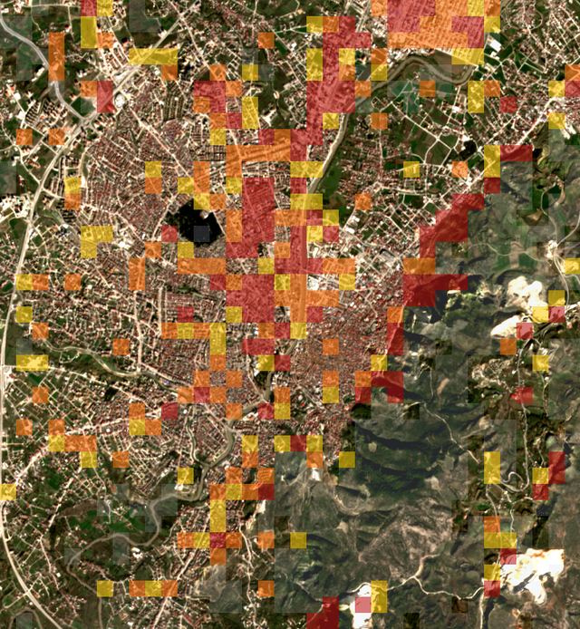

Onde vistoriar primeiro depois de um terremoto
O SismoS2 prioriza os quarteirões mais atingidos por terremotos usando imagens gratuitas do Sentinel-2: compara o antes e o depois, mede o que mudou e ordena a área em células de 200 m.



Antes, 25/01/2023 Depois, 09/02/2023Como funciona
Quatro etapas, do retângulo no mapa até a lista de quarteirões para vistoriar.
- 1
Escolher a área
Desenhe um retângulo de até 0.3° sobre a cidade ou parta de um evento do USGS ou do Copernicus.
- 2
Buscar imagens antes e depois
O sistema escolhe as cenas do Sentinel-2 com menos nuvem e névoa no retângulo, no mesmo tile e órbita.
- 3
Detectar mudanças
Change Vector Analysis em seis bandas, com correção de relevo e classificação por índices espectrais.
- 4
Mapa de prioridade de vistoria
As células de 200 m são ordenadas pela % de mudança: as 10% do topo indicam onde começar.
Estudos de caso
Cada caso foi validado contra mapas de dano e comparado com anos sem terremoto no mesmo lugar. A AUC mede o quanto a % de mudança separa as células danificadas das demais (0,5 = acaso).

Marrocos – Al Haouz (Alto Atlas)
Magnitude 6,8, imagens de 29/08/2023 e 13/09/2023
Diferença significativa (DeLong p = 0,014). Visitando 10% das células, alcançam-se 38% dos prédios com dano. Referência: Copernicus EMS EMSR695 – AOI 07.

Turquia/Síria – Kahramanmaraş (Antakya)
Magnitude 7,8, imagens de 25/01/2023 e 09/02/2023
Diferença significativa (DeLong p = 0,002). Visitando 10% das células, alcançam-se 30% dos prédios com dano. Referência: Prédios destruídos mapeados pelo HOT no OpenStreetMap.
Dados abertos usados
Tudo vem de fontes públicas, sem chave de acesso.